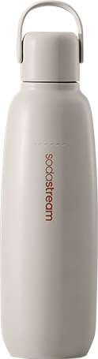
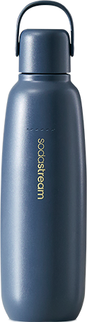
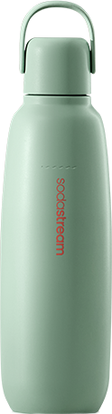
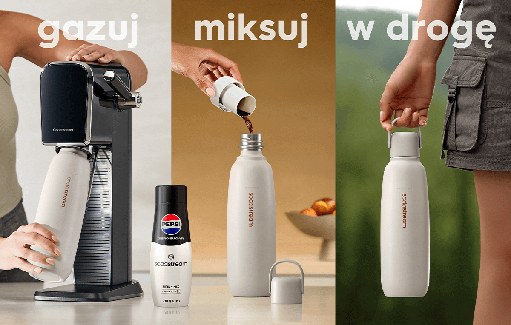
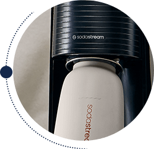
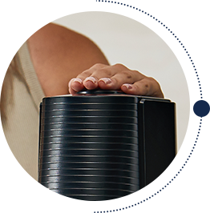
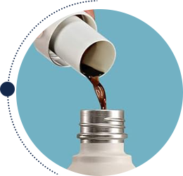

Butelka
termiczna do gazowania wody Cool Granatowa, 0,9 l
Złap ulubione bąbelki do termicznej butelki i zabierz je ze sobą!
Poznaj SodaStream Cool - butelkę termiczną do gazowania wody, która łączy w sobie funkcjonalność kubka termicznego, bidonu na wodę i butelki do saturatora!
SodaStream Cool to rewolucyjne rozwiązanie, które pozwala gazować wodę bezpośrednio w butelce, a dzięki podwójnym ściankom utrzymuje idealną temperaturę Twoich zimnych napojów do 12 godzin.
Wybierz swój styl!
ponadczasowy i uniwersalny, idealny dla osób, które cenią klasykę w nowoczesnym wydaniu.
subtelny beż
elegancki granat
pastelowa mięta
subtelny beż
elegancki granat
pastelowa mięta
Dołącz do rewolucji i bąbelkuj w dobrym stylu!
SodaStream Cool: Twój niezastąpiony towarzysz na lata
Zapomnij o jednorazowych butelkach! SodaStream Cool to bidon termiczny na wodę, który łączy to, co najlepsze: trwałość, wygodę i dbałość o środowisko.
Dlaczego butelka termiczna do gazowania wody SodaStream Cool jest...cool?
Nie przecieka, dzięki hermetycznej konstrukcji z półelastycznym paskiem silikonowym i uszczelką.
Butelka nie zawiera BPA.
Jest łatwa w czyszczeniu - można ją bez obaw myć w zmywarce.
Jest wykonana z wytrzymałej stali nierdzewnej 18/8, odpornej na korozję i uderzenia.
Pierwsza na rynku butelka termiczna, w której nagazujesz wodę z SodaStream!
Wyobraź sobie rześkie bąbelki w upalny dzień. Butelka SodaStream Cool to Twój codzienny kompan, który dba o komfort w każdej sytuacji! Gazuj wodę bezpośrednio w swojej nowej, ulubionej butelce i ciesz się idealnym napojem, gdziekolwiek jesteś.
gazuj
miksuj
i w drogę

Termiczna
butelka do
gazowania
Krok 1
Napełnij butelkę termiczną SodaStream Cool 0,9 l wodą z kranu i zamontuj w saturatorze SodaStream.
Krok 2
Naciśnij przycisk gazowania kilka razy, aż uzyskasz pożądany poziom bąbelków.
Krok 3
Dodaj wybrany syrop SodaStream lub swoje ulubione dodatki.
Do jakich saturatorów pasują butelki termiczne SodaStream
Cool?
Wielorazowe butelki metalowe SodaStream Cool 0,9 l są kompatybilne z saturatorami SodaStream Art, Terra, Duo
i Ensō.
Butelka termiczna czy kubek termiczny - co wybrać?
Butelka SodaStream Cool to pojemność, wygoda i wszechstronność w jednym! Idealna dla aktywnych. Możesz ją
zabrać na
piesze wędrówki, ale też świetnie sprawdzi się też jako kubek termiczny do samochodu.
Czy istnieje bidon,
który potrafi wszystko?
Tak! SodaStream Cool to pierwszy termiczny bidon, w którym możesz gazować wodę. Utrzymuje idealną
temperaturę napojów
gazowanych i bez gazu – zarówno zimnych oraz ciepłych*.
*UWAGA! Nie nasycaj gazem wody o temperaturze powyżej 45°C. Zachowaj szczególną ostrożność podczas przechowywania gorących płynów w butelce i otwierania butelki zawierającej gorące płyny.
Designerska butelka, która definiuje Twój styl
Pracujesz w biurze, a po pracy biegniesz na siłownię? SodaStream Cool
dotrzyma Ci kroku przez cały dzień, zapewniając
nawodnienie i wygodę w każdej sytuacji.
Lubisz aktywnie spędzać czas na świeżym powietrzu? Zabierz SodaStream Cool na rower, spacer czy
wycieczkę w góry. Ciesz
się ulubionymi napojami w idealnej temperaturze, gdziekolwiek jesteś.
Cenisz sobie styl i elegancję? SodaStream Cool to nie tylko funkcjonalny bidon, ale też modny
dodatek, który podkreśli
Twój indywidualny styl.
Dbasz o środowisko? Z SodaStream Cool możesz zamienić tysiące jednorazowych butelek na lepsze i
przyczynić się do
ochrony naszej planety.
Szukasz idealnego pomysłu na prezent urodzinowy? SodaStream Cool to praktyczny i stylowy
upominek, który ucieszy
każdego.
Więcej możliwości, więcej smaku!
Zamień swoją wodę gazowaną w coś wyjątkowego dzięki syropom SodaStream. Twórz własne napoje na każdą okazję:

Domowe napoje gazowane:
Dodaj do wody gazowanej syrop SodaStream i stwórz swój idealny napój. Wybieraj spośród owocowych wariantów bez cukru lub klasyków w stylu Coli. Odkrywaj nowe smaki i miksuj do woli!

Lemoniada:
Przygotuj w kilka chwil klasyczną lub owocową lemoniadę gazowaną, która doskonale ugasi pragnienie, niezależnie od pogody!

Moktajle i koktajle:
Korzystaj z bezalkoholowych baz SodaStream Crafted, aby tworzyć wyjątkowe napoje na spotkania z przyjaciółmi – od owocowych miksów po eleganckie kompozycje na wieczór.